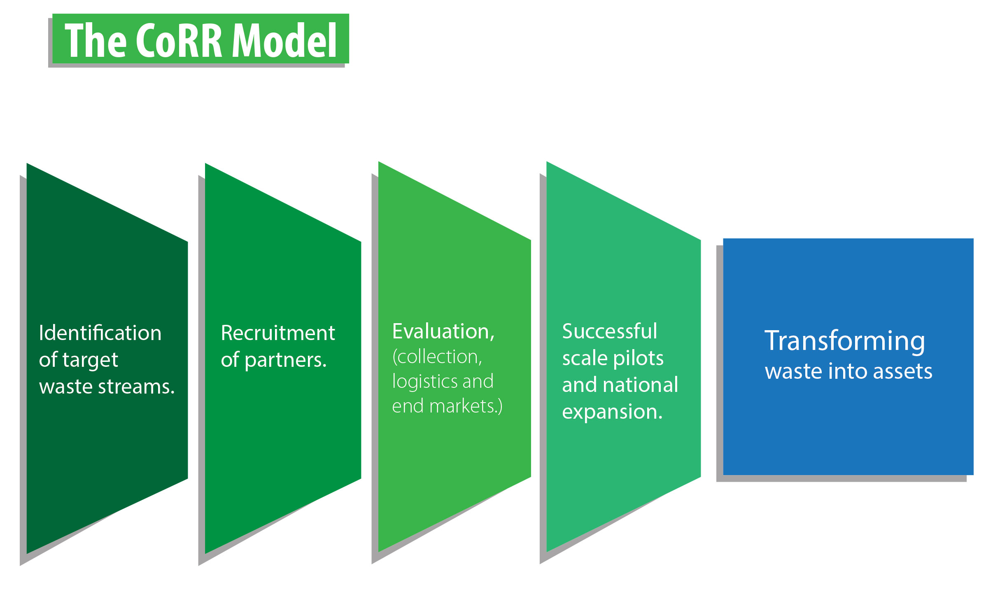
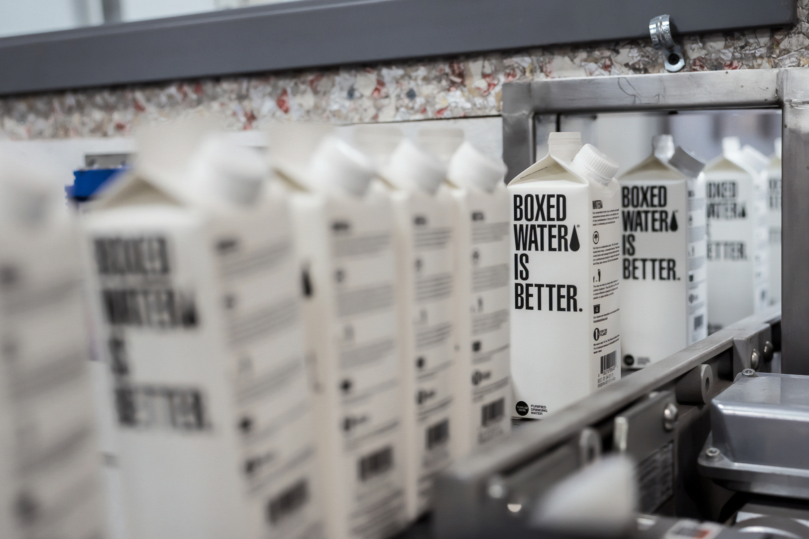
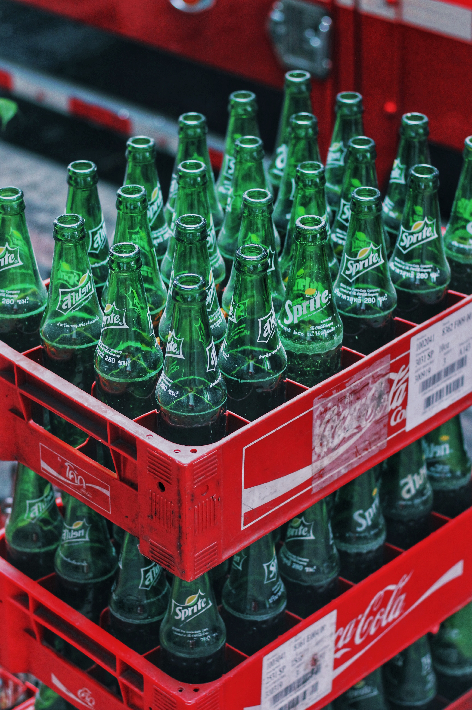
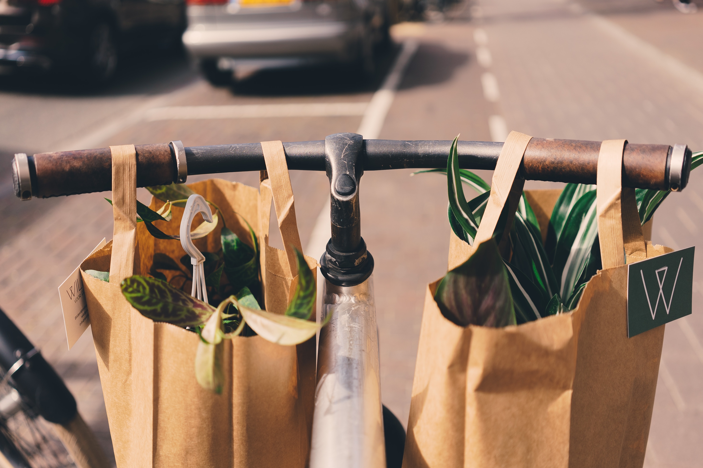

About Corr
The Opportunity
Our goal is to transform waste into assets to that will reduce or mitigate: Disposal costs. Loss of many valuable materials Truck traffic and air pollution, disproportionately burdening low-income communities. Release of millions of tons of greenhouse gases that cause climate change
A Coalation
Assistance in launching groundbreaking recycling programs that can be transferred to markets nationwide. Third-party monitoring, evaluation, and promotion of program results Opportunity to network with businesses throughout the supply chain Promotion of participation in cutting-edge pilot programs Opportunity to learn about emerging waste diversion technologies
A Project of Global Green
Global Green works to create sustainable urban environments and combat global warming through a unique cross-cutting approach that merges innovative research, technical assistance, cutting-edge community based projects and targeted education and outreach.
Staff
Click here for more information about team Corr
Executive Committee
The Executive Committee is an advisory committee to Global Green and CoRR's Director. In this capacity, the committees advises Global Green on how to optimize the business relevance of CoRR while meeting istated environmental goals and objectives. Members serve a one year term. As a project of Global Green USA, CoRR is ultimately governed by the charter and Board of Global Green.
Links & Resources
Click here for videos from past CoRR Conferences.
FEATURED PROJECTS
CoRR’s programs close the loop on food packaging and food waste, and locally recover the energy in wasted food, powering the city with green energy. The following diagram depicts how we go about ransforming waste into assets, benefitting municipalities nationwide.

-

Success Stories
RUNNING TOWARD RECYCLING: Largest Cross Country Meet in the U.S. Partners with Global Green USA to Pilot Paper Cup Recycling Initiative; Reduce CO2 Emissions
September 1, 2015 (Los Angeles, CA) — National environmental non-profit Global Green USA is teaming up with the largest cross country meet in the United States, the Portage Invite in Portage, Michigan, to put recyclable paper cups to the test, both for performance and for recyclability at a local paper mill. Using cups developed by Coalition for Resource Recovery (CoRR) member LBP Manufacturing that have passed a recyclability protocol developed by CoRR member Western Michigan University (WMU), Global Green USA will coordinate their use, collection and recycling at a paper mill in Kalamazoo, MI operated by Graphic Packaging.
The successful recovery and recycling of these cups will represent a key step in identifying best systems for keeping valuable paper fiber in the market as high-quality products, and out of landfills. Unlike many other paper sources, such as newsprint and magazines, foodservice packaging is a growing stream but seldom recovered for recycling. According to the EPA, 5.6 million tons of food service packaging is landfilled in the US each year, releasing greenhouse gas emissions equivalent to six coal-fired power plants. Since 2009, Global Green’s Coalition for Resource Recovery (CoRR) program has been working to divert these valuable materials into new products.
See the full press release here.Reimaging the School Lunch Tray in New York City
In the 2013 Fall semester, Global Green USA and Parsons the New School for Design held a class focused on re-designing New York City school lunch trays. With over 830,000 lunch trays sent to landfill each school day in NYC, the challenge is: Can we transform trays currently made from unrecoverable expanded polystyrene foam into aesthetically pleasing, functional, recyclable, and compostable lunch trays? Read more
Tour of United Corrstack Pulp Mill in Reading, PA
CoRR team members toured Interstate Resources’ United Corrstack pulp mill – a mill that accepts paper coffee cups as a part of a larger mix of inputs (the primary feedstock for the mill is OCC). The goal of the trip was to see first-hand how the process works and how foodservice packaging fits as an input for their end-products.
Click on the photo below to view a slide show. ">
">
Food Packaging
-
![CoRR’s goal is for produce, poultry, and seafood to be transported to grocers and restaurants in recyclable wholesale transfer packaging. Poultry, meats, seafood, and produce typically shipped to restaurants and grocery stores in a type of corrugated box which contains a wax moisture barrier that
renders it un-recyclable, resulting in 1.47 million tons of waxed corrugated boxes discarded in the US each year. If designed for recycling and recycled, use of recyclable boxes in place of paraffin-coated packaging yields a greenhouse gas savings of 4.5 million mtCO2e, equivalent to eliminating an entire coal-fired power plant.](img/portfolio/packaging.png)
Wholesale Packaging
-
![Our goal is to accelerate the development of a local, reliable, environmentally-sound, and economical commercial food waste recovery infrastructure for urban centers. Over 34 million tons of food waste is generated in the US each year. Less then 5% of te food waste is currently recovered.
Diverting this food waste from landfills would result in the avoidance of more than 23 million metric tons of CO2 equivilance each year, the same as taking 7 million cars off the road. Urban areas face particular challenges in deploying food waste recovery solutions given a number of factors, including: the quantity of waste, the lack of availability of sufficient land area to treat it, land values, zoning ordinances, potential alterations to trucking routes,
and the need for much more robust end-markets if solutions are to be scaled up.](img/portfolio/foodWaste.jpg)
Food Waste
-
![CoRR’s goal is to work with carpet manufacturers, removers, sorting distributors, recyclers, and material end product consumers to to increase carpet take back locally in New York City, through siting a new carpet take back facility in the New York City Metro Region.
<br>Over 100 million yards, or approximately a billion pounds of spent carpet is annually removed in New York City and the surrounding region.Currently, non-reclaimed or recycled carpet is diverted to landfills that are at an average distance of over 400 miles, or are burned in regional incinerators.<br>
<h4>Solution</h4><br><p>Capturing spent carpet within a short distance of its removal and submitting it to proven deconstruction, separation, cleaning and recycling application technologies in a central location with truck and barge access will eliminate a shipping distance involving two to four transfers and lost transit time, pipeline inventories, and an inequitable cost- equivalent-to-value ratio.
There are more than a dozen logical sites for establishing a carpet recycling facility within New York City. A typical location under study is the Brooklyn Navy Yard, where Building 128 is slated for tenant refurbishing utilizing State and City grant funds totaling $17 million, with the BNY targeting “green” light industry opportunities.</p><h4>Current Successful Technologies</h4><br>
<p>Many carpet manufacturing companies have invested in carpet deconstruction and component processing plants. The following chart shows the broad diversity of reclaimed resources and targeted end-uses that these manufacturing operations produce.</p><br>
<img src='http://www.thecorr.org/programs_carpet_clip_image1.jpg' style='width:400px; margin-left:25px;'><h4>Combining Successful Technologies</h4><p>A coalition of the major carpet manufacturers and successful independent carpet recyclers, formed to contribute technologies to a New York City sited collection, sorting, deconstructing, purifying, and end-use manufacturing facility could represent a practical means of accelerating spent carpet recycling in the USA.<br>
<br>Below is a schematic diagram of what such an operation might look like and include as contiguous manufacturing processes:</p><br><img src='http://www.thecorr.org/programs_carpet_clip_image2.jpg' style='width:400px;margin-left:24px;'>](img/portfolio/carpet.jpg)
Carpet
-

Beverage Containers
-

Grocery and Shopping Bags
{kind=link}
{kind=link}
{kind=link}
FOLLOW US
Beautifully simple follow buttons to help you get followers on